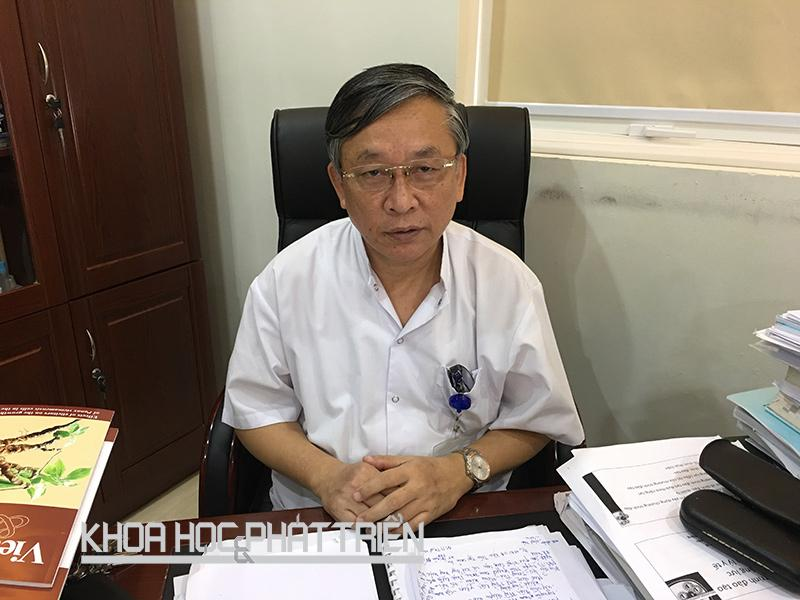
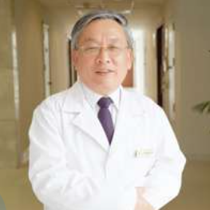

PGS.TS
Nguyễn Tiến Quyết
Giám đốc Bệnh viện Hữu nghị Việt - Đức, nguyên Chủ tịch Hội đồng khoa học của Bệnh viện Hữu nghị Việt - Đức, Phó Chủ tịch Tổng hội Y học Việt Nam
Ông là một bác sĩ ngoại khoa được đào tạo bài bản tại Đại học Y khoa Hà Nội và Bệnh viện Việt Đức. Năm 1985, bác sĩ Nguyễn Tiến Quyết được cử đi học nội trú ngoại khoa tại Đức. Trở về Việt Nam năm 1991, ông gắn bó với Khoa Phẫu thuật gan mật - bệnh viện Việt Đức. Với trình độ chuyên môn và năng lực quản lý, ông được bổ nhiệm giữ chức vụ Phó Giám đốc và sau đó là Giám đốc bệnh viện cho đến năm 2015. PGS.TS Nguyễn Tiến Quyết chính là người đầu tiên thực hiện thành công ca ghép gan từ người cho sống và người cho chết não - một trong những thành tựu y học xuất sắc của y tế Việt Nam.
Đến nay, ông là chủ nhiệm 3 đề tài khoa học cấp nhà nước, 8 đề tài khoa học cấp bộ và nhiều đề tài cấp cơ sở. Tiêu biểu trong đó, phải kể đến một số đề tài như: Ghép gan, thận từ người cho chết não; nghiên cứu ứng dụng kỹ thuật can thiệp mạch và phẫu thuật nội soi trong điều trị chấn thương gan và thận; nghiên cứu về sỏi mật... Ông cũng tham gia thực hiện nhiều đề tài cấp Bộ quan trọng như: Nghiên cứu về viêm tụy cấp; các nghiên cứu về bệnh sỏi mật, ung thư gan... Ghi nhận những đóng góp, cống hiến ý nghĩa, đáng trân trọng xuyên suốt chặng đường sự nghiệp vẻ vang đã đi qua, TTND.PGS.TS Nguyễn Tiến Quyết đã vinh dự được Đảng, Nhà nước, Bộ Y tế trao tặng nhiều danh hiệu, phần thưởng cao quý như: Huân chương Lao động hạng Nhất, Huân chương Lao động hạng Nhì, Huân chương Lao động hạng Ba. Danh hiệu Anh hùng Lao động năm 2011. Giải thưởng Nhân tài đất Việt năm 2011. Đặc biệt, năm 2014, PGS.TS. Nguyễn Tiến Quyết đã được chọn là một trong 10 Công dân Thủ đô ưu tú nhân dịp Kỷ niệm 60 năm Ngày giải phóng Thủ đô.
PGS.TS Nguyễn Tiến Quyết.
Không có gì tuyệt vời hơn đối với người bác sĩ là cứu được bệnh nhân thoát khỏi án tử thần” - PGS.TS Nguyễn Tiến Quyết, nguyên Giám đốc Bệnh viện Việt Đức đã nhiều lần nhắc lại câu nói ấy trong cuộc chuyện trò với tôi vào một sớm mùa thu. Gắn bó với ngành y từ thuở đôi mươi, giờ đây khi mái tóc đã điểm bạc, niềm say mê và tình yêu với nghề của ông dường như vẫn nguyên vẹn như thuở ban đầu…
PGS.TS Nguyễn Tiến Quyết chia sẻ, ngoài thầy Tôn Thất Tùng, những người thầy mà ông ngưỡng mộ như: Bửu Triều, Đỗ Kim Sơn, Nguyễn Đình Hối, Đỗ Đức Vân, Đặng Anh Đệ… cũng là những tấm gương sáng về y thuật và y đức để ông soi chiếu, học tập và phấn đấu…
Với những đóng góp và cống hiến cho sự nghiệp chăm sóc sức khỏe nhân dân và đóng góp cho Y học nước nhà, PGS.TS Nguyễn Tiến Quyết đã vinh dự được nhà nước phong tặng danh hiệu Thầy thuốc Nhân dân, Anh hùng lao động; huân chương lao động hạng Nhất, Nhì, Ba cùng nhiều giải thưởng cao quý khác. Đồng thời, ông cũng là chủ biên của của cuốn sách “Ghép gan người lớn” và đồng chủ biên của nhiều cuốn sách về bệnh lý gan mật tụy khác. PGS Quyết nguyên là Chủ tịch hội Ngoại khoa Việt Nam, là Phó Chủ tịch tổng hợp Y học Việt Nam và Phó Chủ tịch hội Ghép tạng Việt Nam.
Hiện tại, PGS.TS Nguyễn Tiến Quyết là Cố vấn cao cấp Khoa Ngoại Tiêu hóa - Gan mật - Tiết niệu - Bệnh viện Đa khoa Quốc tế Vinmec Times City.